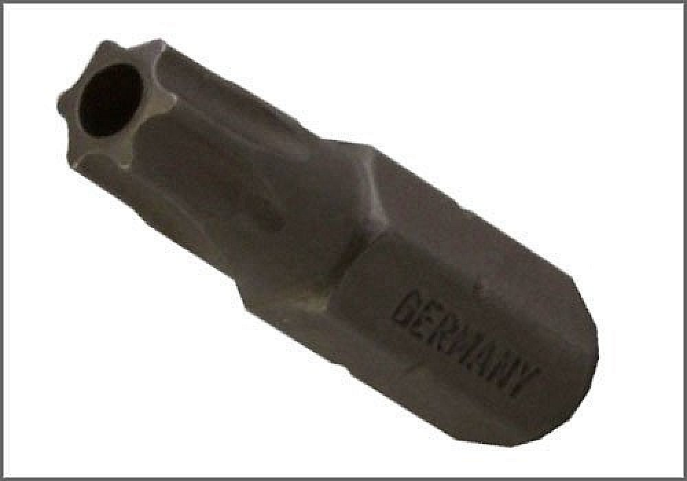

Torx Socket - AST Tool # H 2223 T-30 H
Torx Socket
AST tool# H 2223 T-30 H

Used for the R and R of the Airbag on models with tamper resistant fasteners.
- T-30 Torx
- Tamper Resistant
- Used for the R and R of the Airbag
Contact AST for pricing.
Assenmacher Specialty Tools
1-800-525-2943